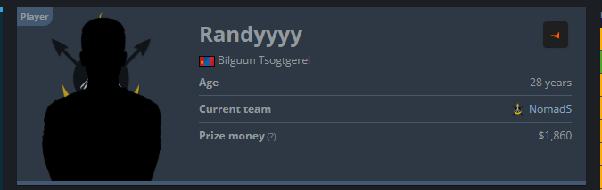
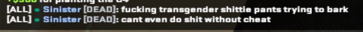

Rusndage小雪花❄️🍥
@RusndageSNF
@RieeQvQ 蒙古的傻逼是这样的，我打Faceit也一堆傻逼蒙古人，建议先治好沙子再来打游戏


Rie
@RieeQvQ
a mongolian "pro" player mad at a "transgender"
只能说CS蒙古职业选手确实有素质 上来给我扣个跨性别的帽子先歧视一番 有玩CS的可以下载DEMO看看
btw demo link:https://t.co/iN4yfedTkm https://t.co/IPghRObToH